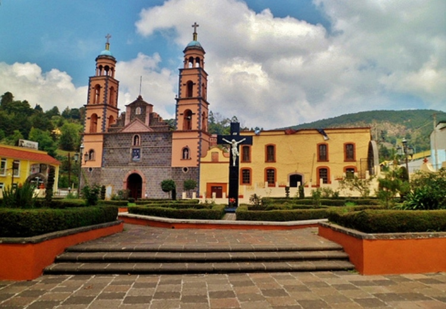
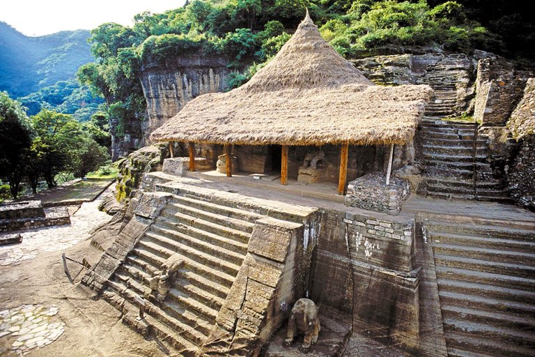
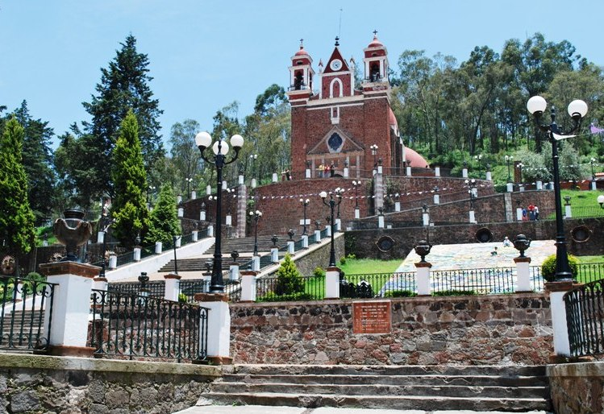
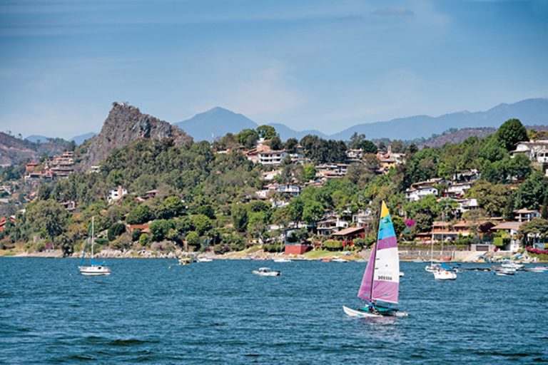

El Oro
Es un bello Pueblo Mágico de pasado minero y presente turístico, apuntalado por el rico acervo físico que dejó la explotación del metal que le da nombre a la localidad. El oro de El Oro llegó a estar catalogado como el segundo mejor del mundo en calidad, después del extraído en una mina de la antigua provincia sudafricana de Transvaal. Ahora los visitantes de El Oro pueden explorar el pasado duro y legendario del pueblo, a través de una oferta cultural que incluye el Museo de la Minería, el Socavón San Juan y el Tiro Norte, entre los lugares más representativos. Otro atractivo de El Oro es el Teatro Juárez, edificado a comienzos del siglo XX en pleno apogeo económico. Esta sobria edificación neoclásica vio pasar por su escenario a las grandes figuras del bello canto de la época, entre ellos Luisa Tetrazzini y Enrico Caruso.
El Oro también ofrece opciones a los amantes de la vida natural. Entre estas se encuentran la Cascada El Mogote, la Presa Brockman y La Mesa, un santuario mexicano de las bonitas mariposas Monarca, situado a unos 50 minutos.
Malinalco
Este Pueblo Mágico mexicano, situado cerca de Toluca y Cuernavaca ofrece al turista una de las rarezas arquitectónicas más curiosas del mundo: un templo prehispánico tallado enteramente en la roca, en un solo cuerpo. El templo principal Cuauhcalli, situado en el Cerro de los Ídolos, es uno de los pocos monolitos que son al mismo tiempo lugar de veneración religiosa.
Entre las particularidades ancestrales de Malinalco está el consumo de hongos alucinógenos, a los que la medicina indígena tradicional le atribuye poderes curativos. Una condición para esa facultad es que sean recogidos por púberes y doncellas, únicos seres lo suficientemente limpios como para no contaminarlos.
El pueblo también agasaja al turista con la Trucha al estilo Malinalco, aunque si prefieres algo más autóctono, pueden prepararte un guiso de iguana o un platillo a base de rana. Pero si no te gusta arriesgarte por la boca, también cuentas con las universales pizzas y hamburguesas.
Metepec
Es probablemente el Pueblo Mágico con el ingreso percápita más elevado, aunque persisten notables desigualdades, Tiene una intensa actividad industrial, principalmente de capital extranjero, y las actividades de la construcción y la del turismo son las otras que sustentan su economía. Goza de una vieja tradición artesanal, especialmente la ligada al barro y al vidrio. En sus corredores artesanales podrás encontrar bellas piezas de cerámica, vidrio soplado, trabajos en cuero, cestería y orfebrería.
Metepec ha ganado fama como el lugar ideal para correrse una buena juerga. Gente de Toluca y otras ciudades y pueblos cercanos se acercan hasta allá para parrandear de lo lindo.
En la arquitectura del Pueblo Mágico destacan la Iglesia del Calvario, una sobria edificación de líneas neoclásicas, y el ex Convento de San Juan Bautista, con su iglesia, que tiene una llamativa fachada barroca hecha por los indígenas del lugar. El Centro Panamericano de Ecología es uno de los principales representantes de la arquitectura contemporánea.
Tepotzotlan
Es un Pueblo Mágico al norte del estado que vale la pena visitar solo para ver uno de los principales símbolos del barroco churrigueresco en México, el antiguo Colegio de San Francisco Javier, donde actualmente opera el Museo Nacional del Virreinato. Esta muestra, la más importante del país referida a Nueva España, cuenta con una espléndida iglesia, en la que destacan su altar mayor y todo su demás interior.
En el Parque Estatal Sierra de Tepotzotlán está el Acueducto de Xalpa, un viejo monumento de casi 450 metros de longitud que es más conocido como los Arcos del Sitio. Fue levantado por la Orden Jesuita en el siglo XVIII y fue el primer sistema estructural que abasteció de agua a la localidad.
Otra área verde para los amantes de la naturaleza es el Parque Ecológico Xochitla, muy cerca de la ciudad, situado en el predio en el que estaba la Hacienda La Resurrección. Cuenta con vastas arboledas, invernadero, lago y áreas para juegos.

Valle de Bravo
Los principales atractivos de este acogedor poblado colonial son su laguna y la naturaleza de los alrededores, frecuentadas por los practicantes de deportes de agua y montaña. En el lago se pesca la trucha arcoíris, aunque es más probable que consigas en el anzuelo una carpa o una tilapia. El bonito cuerpo de agua también es escenario para regatas de veleros y para la práctica del esquí.
En tierra, puedes hacer senderismo, ciclismo montañero e incluso cosas con más adrenalina, como parapente y enduro. En la localidad hay varios campos de golf y otros lugares de interés son la iglesia de San Francisco de Asís y el Museo Arqueológico.
El Festival de las Almas, un evento con reminiscencias prehispánicas, virreinales y más recientes, tiene lugar en torno al 2 de noviembre, Día de los Muertos. En el sitio de Avándaro, a corta distancia de Valle de Bravo, hay una bonita cascada que en su caída semeja un velo de novia.
Teotihuacan
Integra un Pueblo Mágico junto con su municipio hermano, San Martín de las Pirámides. La zona arqueológica de Teotihuacán ha ganado fama mundial y es uno de los conjuntos monumentales prehispánicos más visitados del continente americano. Sus tres grandes símbolos son las dos pirámides, la del Sol y la de la Luna, y el Templo de Quetzalcóatl.
La Pirámide del Sol es la más elevada; mide 63,55 metros y es el tercer edificio prehispánico más alto del subcontinente mesoamericano, solo superado por la Gran Pirámide de Tlachihualtépetl, en Cholula, y por el Templo IV de Tikal. Frente a la Pirámide de la Luna está la Plaza de la Luna, con un altar central y 8 cuerpos dispuestos en «cruz teotihuacana».
El Templo de Quetzalcóatl o Pirámide de la Serpiente Emplumada, levantado en honor del principal dios del olimpo precolombino, está ornamentado con esculturas, relieves y detalles entre los que destaca la Cabeza de Tlaloc y las representaciones onduladas de la Serpiente.